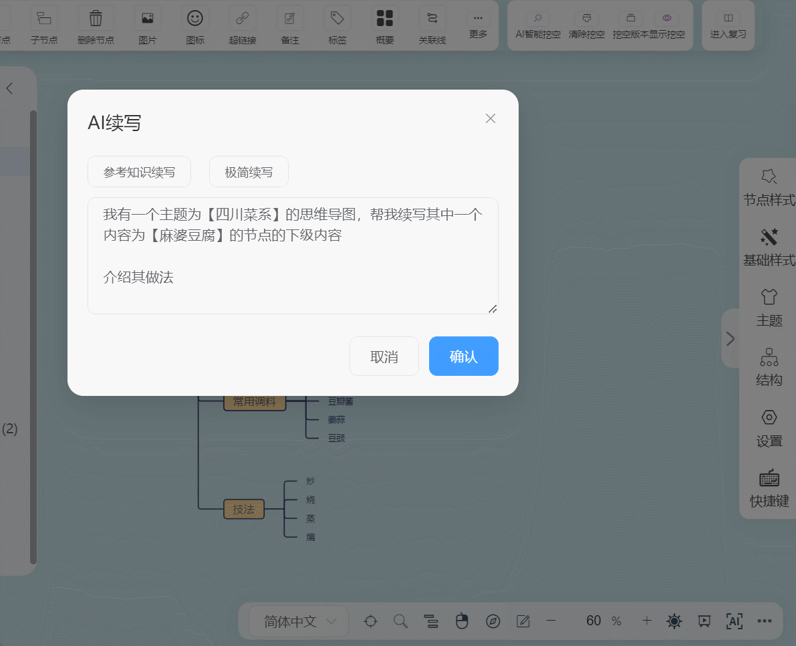
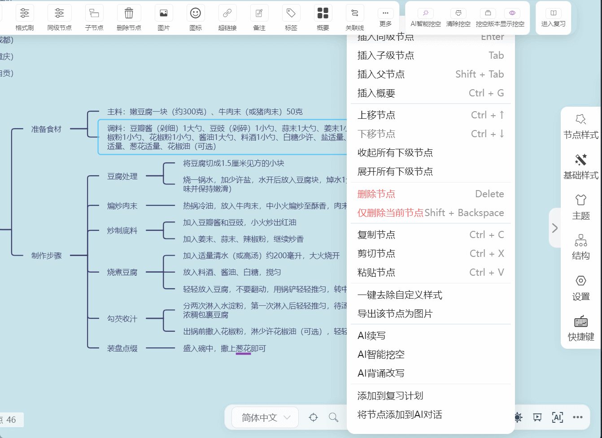
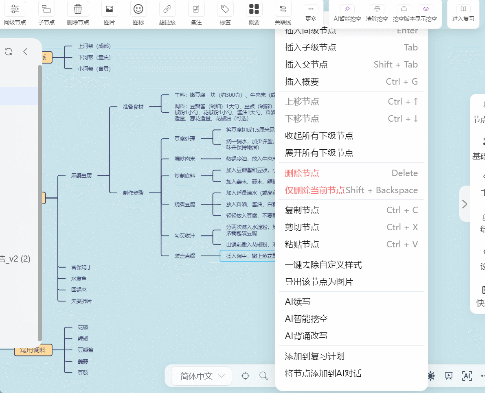
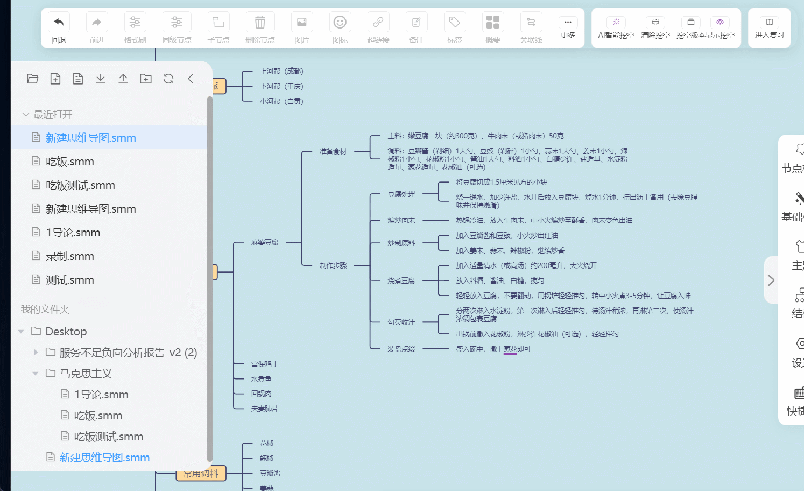
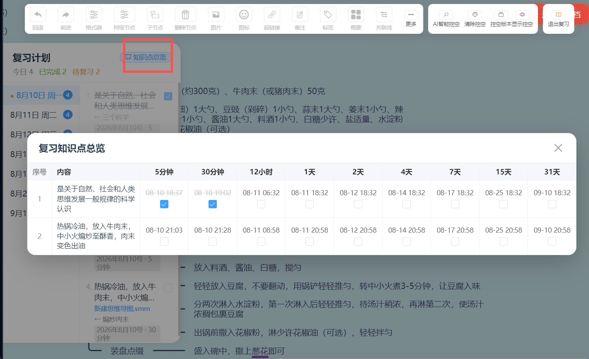
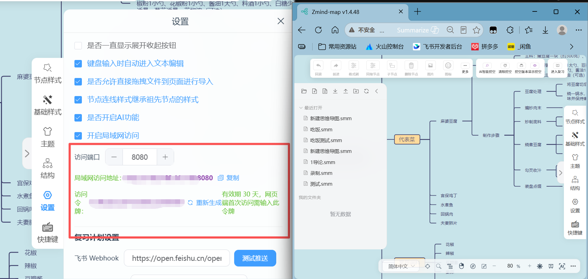
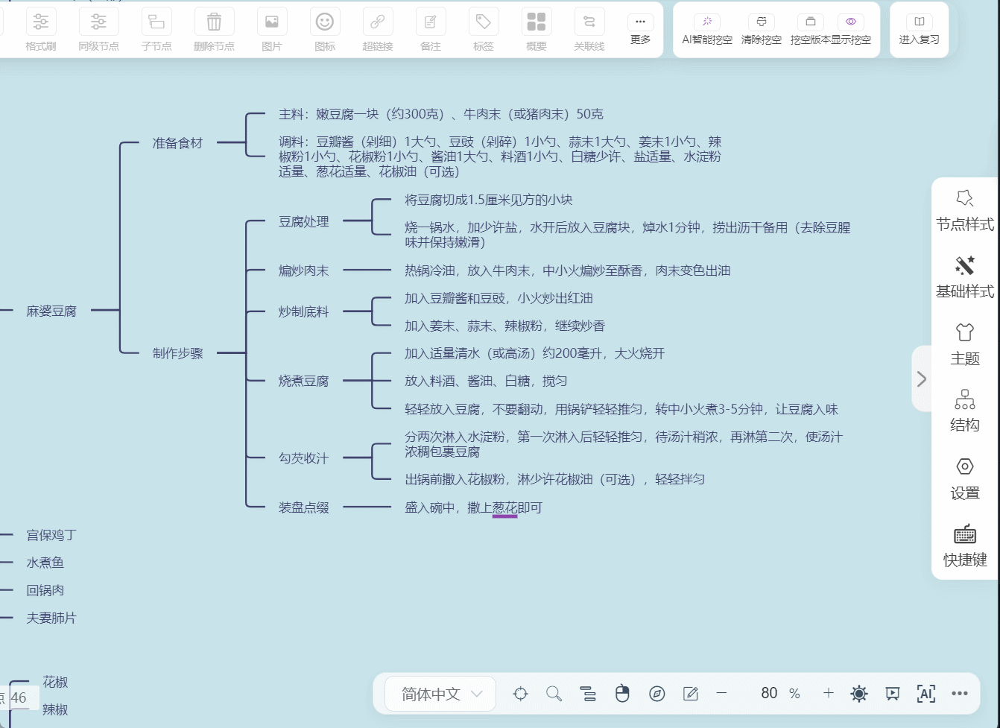
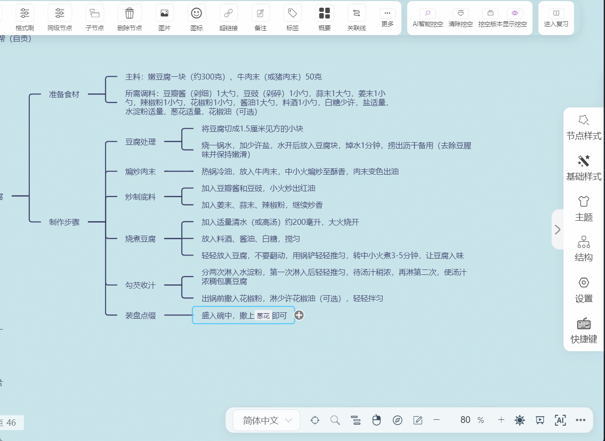

一款 AI 驱动的思维导图二创工具，集成 AI 生成、AI 挖空、艾宾浩斯复习曲线、飞书定时提醒等学习增强功能，让思维导图成为你的 高效学习引擎。
本项目基于 wanglin2/mind-map 开源项目二次开发，在此特别感谢原作者 @wanglin2 的杰出贡献与开源精神。Zmind-map 在原项目基础上扩展了 AI 生成、复习模式、定时提醒等学习增强功能。
从 AI 生成到科学复习，从多端访问到悬浮引用，Zmind-map 为你的学习工作流提供全方位增强。
接入 AI API 后，只需输入主题或文本内容，即可一键生成结构化思维导图。支持两种模式：
生成模式：根据输入主题从零生成完整思维导图结构。
续写模式：在已有节点基础上，让 AI 智能补充和扩展内容。
背诵改写：将内容改写为便于记忆的背诵版本。
// 接入 AI API 快速生成思维导图 const generateMindMap = async (prompt) => { const response = await callAI({ model: "gpt-4", prompt: prompt, mode: "generate" // 或 "continue" 续写 }); return parseToNodes(response); };


AI 智能分析思维导图内容，自动挖空关键知识点，生成填空式复习题。帮助你快速检测记忆盲区，让复习更有针对性、更高效。
// AI 挖空 - 自动生成填空节点 const aiBlank = (node) => { const keywords = extractKeywords(node.text); return keywords.map(kw => ({ original: kw, blank: "＿＿＿", hint: generateHint(kw) })); };

基于艾宾浩斯遗忘曲线科学理论，快速添加复习任务、定制个性化复习计划。系统自动按照记忆周期提醒你复习，用最少的次数记住最多的知识。
// 艾宾浩斯复习间隔（天） const reviewIntervals = [ 1, 2, 4, 7, 15, 30 ]; // 自动生成复习任务计划 scheduleReview(task, reviewIntervals);


配置飞书 Webhook后，系统根据艾宾浩斯遗忘曲线生成的复习计划，自动在对应时间点发送飞书消息提醒。再也不怕忘记复习，让学习节奏自动运转。
// 配置飞书 Webhook 定时提醒 const feishuHook = "https://open.feishu.cn/open-apis/bot/v2/hook/xxx"; sendReminder(feishuHook, { task: "复习：数据结构第三章", reviewDate: getNextReviewDate(), interval: "第2次复习（+2天）" });
内置 Web 服务器，开放 8080 端口。局域网内其他设备可直接访问你的思维导图；配合内网穿透工具，还能实现远程随时随地访问。多端同步，无缝衔接。
# 启动前端服务，开放 8080 端口 $ npm run serve # 局域网访问 http://192.168.x.x:8080 # 配合内网穿透远程访问 $ frpc expose 8080 --domain zmind

内置 AI 对话窗口，支持快速添加节点到对话框或快速同步整个文档到对话框进行询问。无需切换工具，在思维导图中直接与 AI 对话，让知识获取更流畅。
// 将节点/文档快速同步到 AI 对话框 sendToChat({ type: "node", // 或 "document" content: node.text, context: getDocumentContext() }); // AI 在对话上下文中回答 await chatWithAI(question, context);

在文档编辑中，鼠标悬浮即可快速显示对应思维导图和节点。无需跳转页面，文档与思维导图联动引用，让知识结构一目了然。
// 文档内悬浮引用思维导图节点 onHover(docElement, async () => { const node = findLinkedNode(docElement); showFloatPanel({ target: docElement, mindmap: getMindMapSnapshot(), node: node }); });
